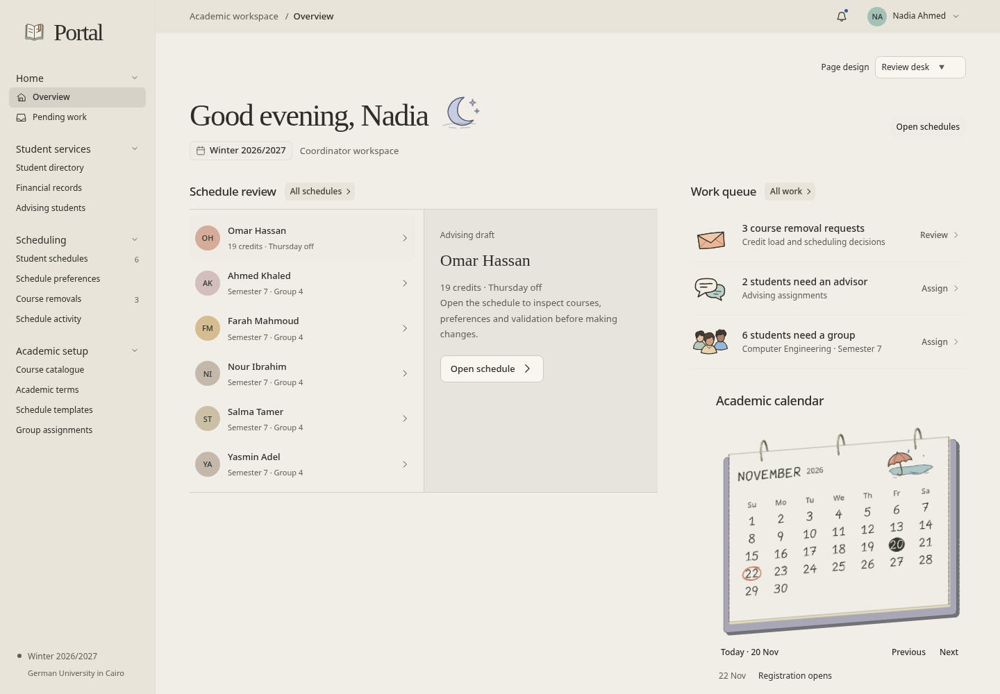
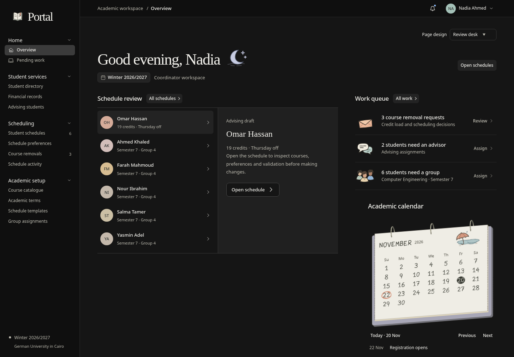

Portal
Open folio
An open record, not a new institution. Retains the book cue already used by Portal; the quiet sage binding and coral tab belong to the approved illustrations.
Portal
Doorway P
A geometric P is also an open doorway. A strong small-size alternative for a front-desk-led identity.
Portal
Card index
Three offset index cards make an identifiable corner. Useful when records, rather than a book, should lead the identity.
Portal
Reading lamp
A task lamp: practical illumination rather than a badge. Warmer and more illustrative than the other proposals.
Portal
Key record
A compact key with a record-card bow. An authentication-centered option; less suited to a whole academic product.
Portal
Term compass
Four folded leaves face the center. Academic orientation without a literal navigation arrow.
Folded P
The corner of one sheet folds into a P-shaped silhouette. A more abstract, high-contrast document mark.
Portal
Handoff
Two overlapping sheets share a common edge. Emphasizes the student-to-advisor handover.
Portal
Courtyard
Three arches around a shared opening. Architectural without copying a university seal or campus facade.
Portal
Sewn register
Visible stitching gives a record book a human, maintained quality. A quiet alternate to the open-book mark.
Portal
Learning path
One continuous route connects a small set of course points. Expresses a planned path rather than a performance dashboard.
Portal
Study window
An uneven four-pane study window. Calm, compact and intentionally different from the book vocabulary.
Portal
Stepped portal
Nested right-angle thresholds create a clear opening. The most architectural and least illustrative proposal.
Portal
Advising pair
Two compact speech slips create a shared center. A communication-led mark; best used only when advising is the product emphasis.
Ribbon initial
One folded ribbon makes a P. Confident at favicon scale, but less obviously academic than the recommendation.
Recommended mark in the existing shell
A review-only placement at the native wordmark scale. No sidebar, navigation or heading is redesigned.

